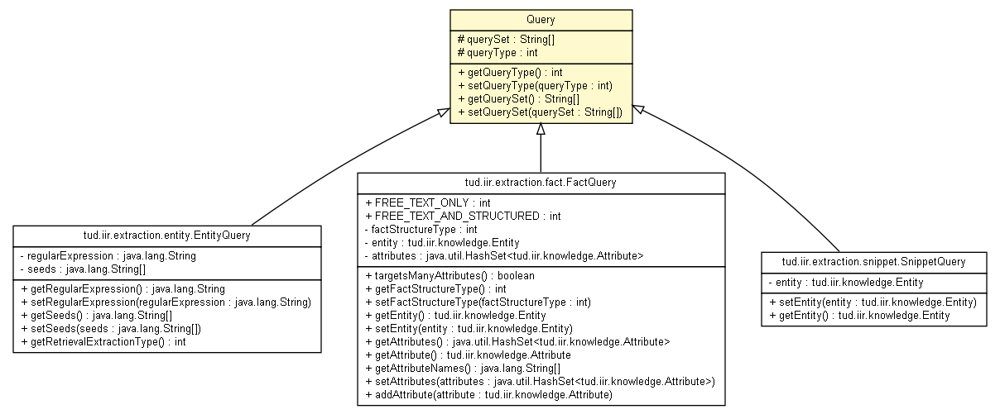

tud.iir.extraction
Class Query

java.lang.Object
 tud.iir.extraction.Query
tud.iir.extraction.Query
- Direct Known Subclasses:
- EntityQuery, FactQuery, SnippetQuery
public abstract class Query
- extends java.lang.Object
Abstract Query class for entity, fact and snippet queries that are sent to a search engine.
|
Constructor Summary |
Query()
|
| Methods inherited from class java.lang.Object |
clone, equals, finalize, getClass, hashCode, notify, notifyAll, toString, wait, wait, wait |
querySet
protected java.lang.String[] querySet
queryType
protected int queryType
Query
public Query()
getQueryType
public int getQueryType()
setQueryType
public void setQueryType(int queryType)
getQuerySet
public java.lang.String[] getQuerySet()
setQuerySet
public void setQuerySet(java.lang.String[] querySet)